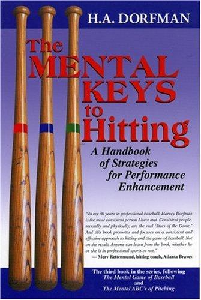

哈维·多夫曼（Harvey A. Dorfman，1935—2011）并非职业棒球出身。他在佛蒙特州曼彻斯特的伯尔与伯顿学院教了二十一年英语，兼任学术主任、体育主管和篮球教练。1983年，一篇他撰写的文章引起了前大联盟球员罗伊·斯莫利（Roy Smalley）的注意，斯莫利将他介绍给奥克兰运动家队农场总监卡尔·库尔（Karl Kuehl）。1984年，多夫曼正式加入运动家队，成为职业棒球史上最早的全职心理技能教练之一。此后二十七年间，他先后服务于奥克兰运动家、佛罗里达马林鱼和坦帕湾魔鬼鱼三支球队，并在1999年加入经纪巨头斯科特·博拉斯公司，为其旗下球员提供心理训练。他随1989年运动家队和1997年马林鱼队两度赢得世界大赛冠军戒指。受益于他指导的球员包括格雷格·马达克斯（Greg Maddux）、罗伊·哈拉戴（Roy Halladay）、布拉德·利奇（Brad Lidge）、杰米·莫耶（Jamie Moyer）、吉姆·阿伯特（Jim Abbott）和阿尔·莱特（Al Leiter）等多位名将。
《击球的心理要诀》出版于2001年，是多夫曼继《棒球心理学》（The Mental Game of Baseball）和《投手的心理ABC》（The Mental ABCs of Pitching）之后的第三部作品。书名虽写"击球"，但它真正探讨的是高压环境下的心理管理——如何在结果不可控时维持纪律，如何在逆境中保持判断力，如何让准备工作而非运气成为表现的基础。
全书围绕几条核心原则展开。第一，"看见球，放轻松"（See the ball and be easy）。多夫曼指出，多数击球手以为自己在看球，实际上只是模糊的注视而非锐利的专注；真正的击球从训练注意力的质量开始。第二，"受控的攻击性"（Aggressiveness under control）。优秀击球手兼具果断出击的攻击性和等待好球的耐心，两者不是矛盾，而是同一枚硬币的两面。第三，"过程—结果—回应"（Approach—Result—Response）的循环框架。击球手能完全掌控的只有击球前的准备（approach）和击球后的心态调整（response），而结果本身只能被影响，不能被控制。一个好的准备加上一个坏的结果，如果回应得当，下一次准备只会更好。第四，自律即自由。多夫曼写道："自律是一种自由——摆脱懒惰与麻木的自由，摆脱他人期望与要求的自由，摆脱软弱与恐惧的自由。"第五，心理韧性的本质不是天赋，而是在逆境中维持正确心态的能力。他说："在事情不理想时把心态调正，是竞技卓越的关键。面对逆境时保持良好视角，这就是'心理韧性'——顶尖运动员的硬通货。"
这本书之所以超越棒球范畴引起广泛关注，在于它的底层逻辑适用于一切需要在不确定性中反复决策的领域。沃伦·巴菲特多年来反复引用泰德·威廉斯的击球哲学——将好球区划分为七十七个格子，只在"甜蜜区"挥棒——来阐释投资中的耐心与纪律。多夫曼的工作正是从心理训练层面为这套哲学提供了操作方法：如何在等待中不焦虑，如何在挥空后不自我怀疑，如何把注意力从不可控的结果拉回到可控的过程上。拥有三十五年交易经验、从未有过亏损年度的职业交易员拉吉·霍纳（Raghee Horner）将此书列为"对我交易回报率最高的五本书"之一，她写道："我热爱棒球，因为它关乎数学和心态。作为交易员，我时刻提醒自己：市场是投手，我在等待属于我的那颗球。交易就是等待。"
劳尔·伊巴涅斯（Raul Ibanez）曾这样评价多夫曼："我父亲教我如何做一个男人，但哈维教我如何像一个男人那样行事。"运动家队前总裁兼总经理桑迪·安德森（Sandy Alderson）回忆道："哈维离开我们的体系去佛罗里达时，我们甚至没有尝试找人替代他，因为他的遗产已经渗透到整个系统里了。他接触过的每一个球员、教练和工作人员，都已浸透了他的哲学和方法。他们都成了哈维的信徒。"
对于中国读者而言，这本书的启示并不局限于体育或投资的某一个领域。它指向一个更根本的命题：在任何高度不确定的竞技场中——无论是击球、交易、创业还是管理——真正区分卓越与平庸的，往往不是才华或信息，而是面对不可控结果时的心理纪律。多夫曼用一生的实践证明，这种纪律可以被系统地训练，而训练的起点，是承认一个朴素的事实：你无法控制结果，但你可以控制自己。